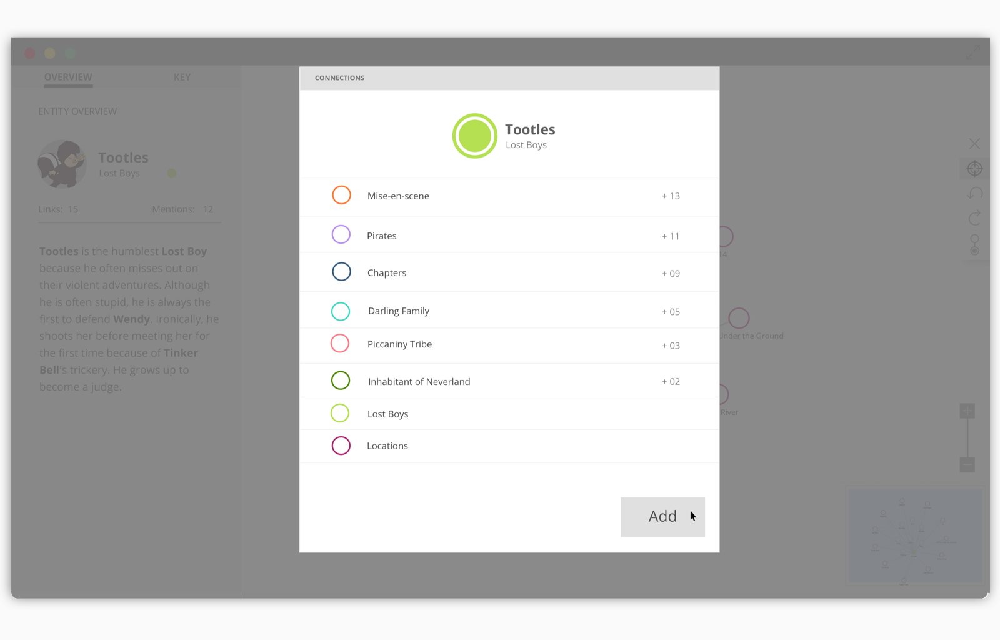
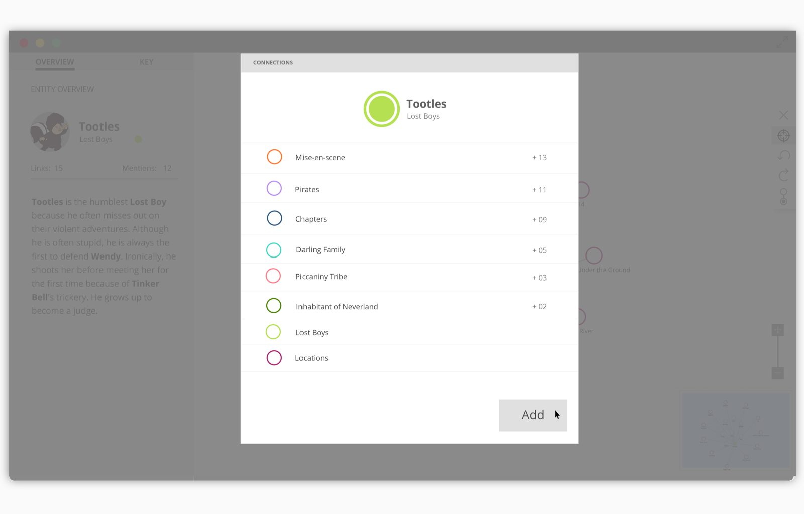

ROLE
Our design team was small enough however that I was involved in every aspect of the design process (except for front end development); incuding market research, lo-fi wires, visual design, prototyping, and user testing.
PROBLEM
BLAH
THE SOLUTION
IMPROVE WATSON'S IINTERACTIVE DATA VISUALIZATION TOOL
Unlike a typical hairball data visualization where you start with a lot and slowly narrow your search, the goal of the data visualization in Watson Discovery Advisor was to "find a needle in a haystack". With this concept, we designed around the notion that your search would bring you to one or a few crucial nodes, and you could expand and explore from there. Our final deliverables consisted of a design guide that included responsive layout instructions, UI scheme, canvas rules, accessibility options, and more. In the end, we presented and handed off our deliverables to the Watson design language team to continue where we left off.
 

INFORMATION GATHERING
Analyze concept of discovery
Analyze elements of data visualization

Find actions of discovery

After we diverged and picked data visualization apart as much as possible, we then convergd and found overarching elements that would help facilitate and focus our designs.
DISCOVERYUncover the meaning and action behind discovery
VISUALIZATION ELEMENTSUnderstand the elements that make up a data visualization
BEST PRACTICESRealize best design practices for interactive data visualizations
We created an initial user flow based off the intention that the user starts their search from a narrow, focused selection of nodes, and can then broaden their exploration from there.

Our front end dev coded a prototype and then with the leadership of our main design researcher Jo, we tested it out on 50+ researchers/analysts from legal, finance, food, and energy industries. One insightful research assest that came out of this user testing was this user journey map, where we mapped out the peaks and lows of the user journey and compared our expectations to what we perceived from our user. In this exercise we found that users were having a particularly hard time expanding links in between nodes and with the zoom and multiselect feature.
Ideation
We started our ideation process by sketching multiple network possibilities based off the core elements we concluded from our research.

With time, context, and multiple iterations, our paper sketches transformed into wireframes.


During the design process we heavily iterated on how the visualization would look and feel as well as how it would be shown responsively.